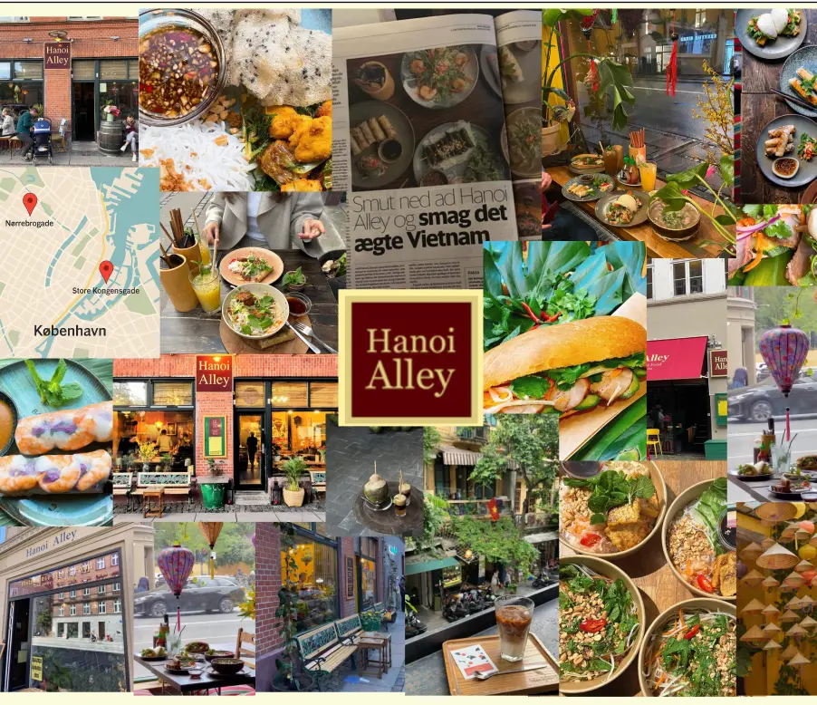
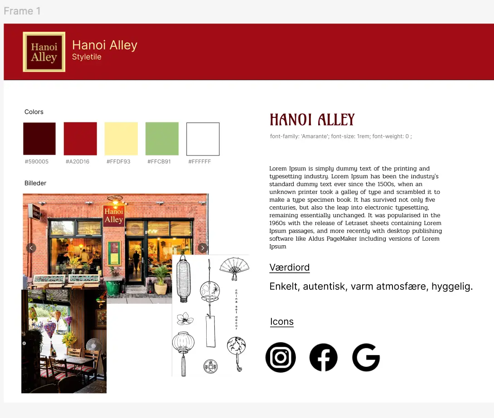
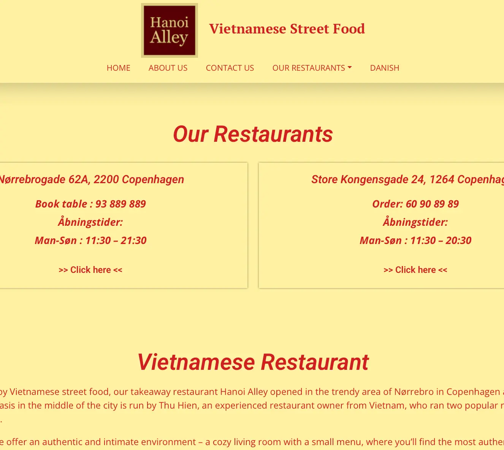
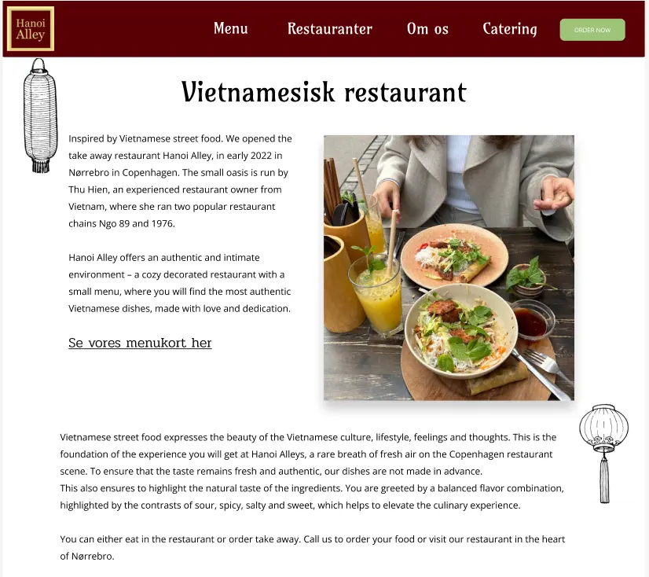

TEMA 5 - GRUNDLÆGGENDE INDHOLD
Formål med projektet:
I dette tema arbejdede vi teams med at redesigne en hjemmeside, for en virksomhed vi selv skulle finde.
Process og løsning:
- Vi indledte med at finde og kontakte en lokal virksomhed, som vi måtte redesigne en hjemmeside for.
- Vi skulle arbejde i sprints med små opagver af gangen som max skulle tage 2 timer, vi havde til opgave at inddele dem i "To do, Doing og Done", det brugte vi trello board til.
- Vi udviklede styletiles og moodboards for at teste vores idéer. Så redesignede vi en virksomheds hjemmeside ud fra vores egne wireframes og layoutdiagrammer.
- Til sidst lavede vi en præsentation, hvor vi dokumenterede forløbet fra start til slut, og viste det færdige virksomhedssite som var optimeret og mere brugervenligt.
Hvad jeg lærte:
- Jeg arbejdede med at forbedre brugeroplevelsen fra noget allerede eksiterende.
- Jeg lærte endnu mere om forståelsen af filformater for at optimere siden.
- Vi arbejdede med github, og jeg fik en god forståelse for, hvordan det er når man samarbejder med andre under kodning af websites.
- Jeg lærte at arbejde i teams på en helt ny måde, vi lavede bla. en kontrakt mellem os og gjorde brug at et trello board.
- Jeg lærte om arbejdsmetoden SCRUM og at holde SCRUM møder og arbejde i sprints i teamet.
Se projektet her:
Redesign af Hanoi Alley



